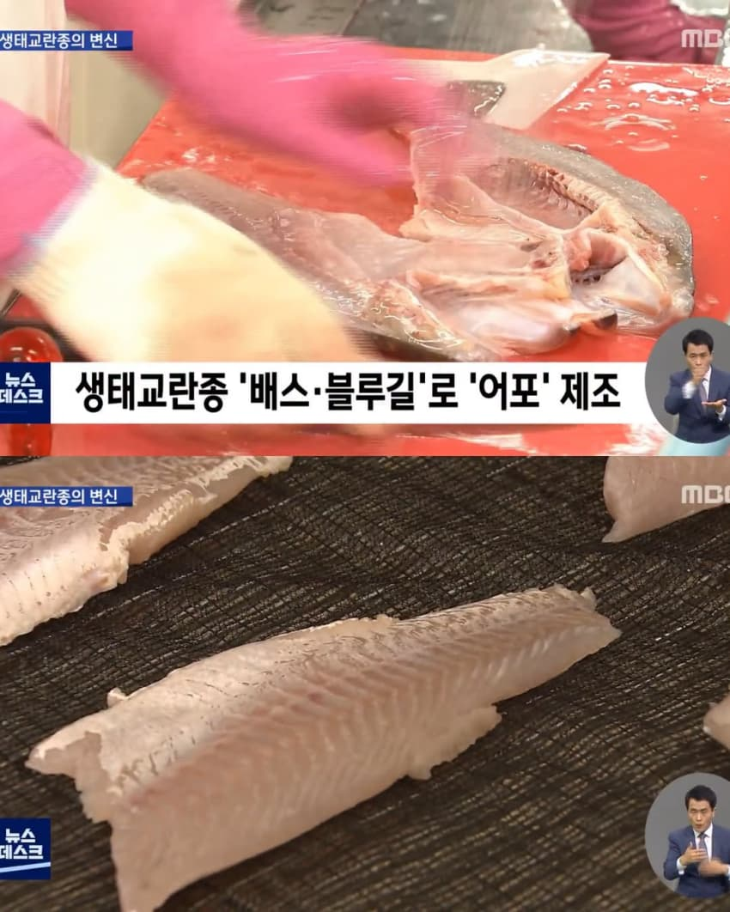
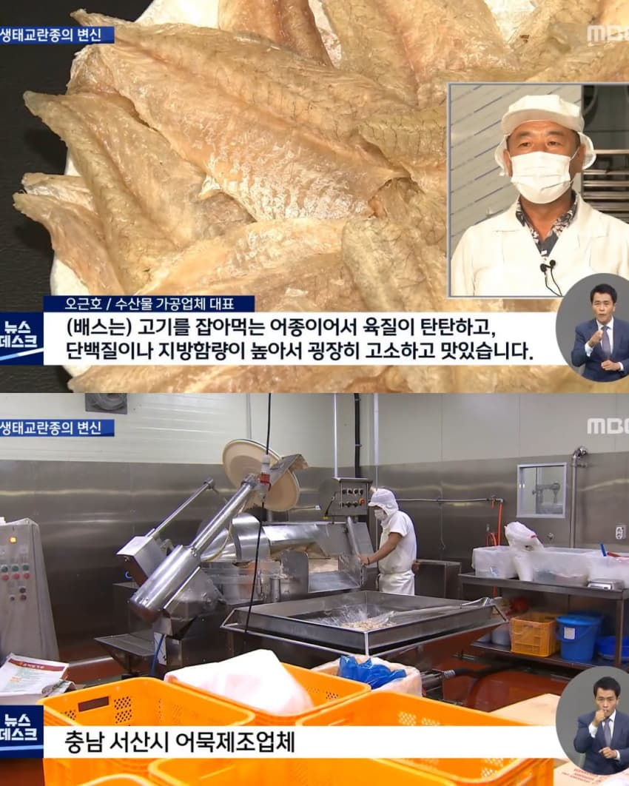
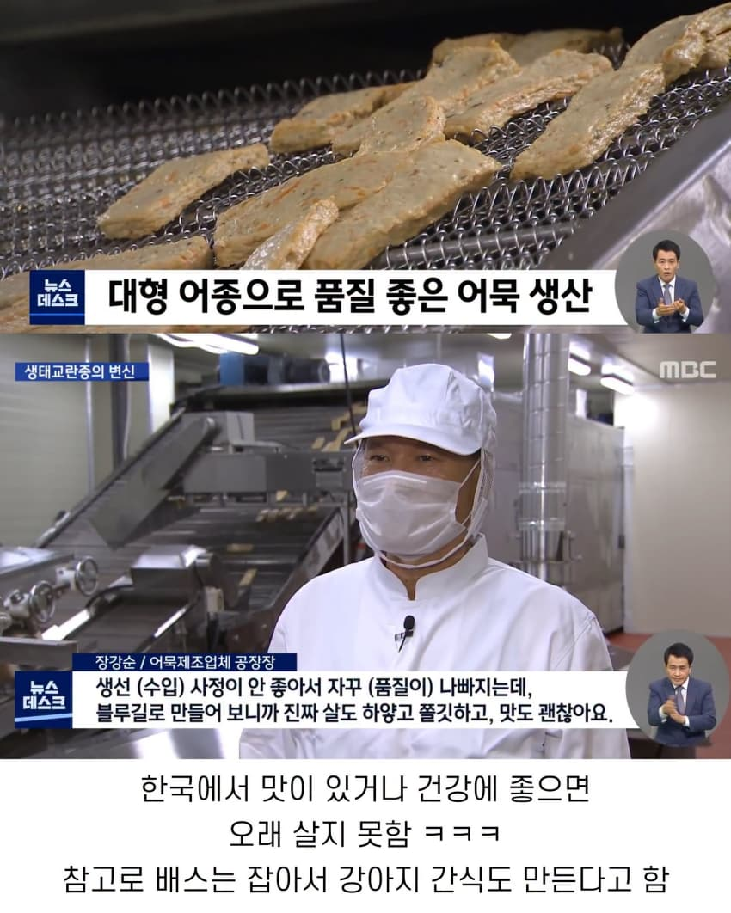

그가 해냈어!
이젠 강준치 차례야!
근데 진짜 진지하게 강준치는 가망 있냐?
그거랑 또 뭐였지 바다생선??
황어
ㅋㅋㅋㅋㅋㅋㅋㅋ 기억력 좋네 개붕이
맞아 황어였어
동해가서 처음으로 잡은게 황어였는데 못먹는다고 옆에서 낚시하던 할아버지가 달라고해서 드린적 있음.
황어도 그냥 썰어서 초장 찍어 드시는 양반들 생각보다 많음ㄷㄷ
겨울인가..그때쯤 동해 어시장가면 황어를 수조에 넣고 팔더라..
맛이 없기 때문에 성가신 물고기. 맛이 없어서 개도 안 먹는 봄 황어라는 속설도 있고 심지어는 낚시에 걸려서 지나가는 길고양이에게 주어도 잘 먹지 않는다.
주의할 점은 내장을 완전히 제거하고 먹어야 한다는 것. 황어는 저서성(바닥) 생물을 먹는 잡식성이라 뱃속에 독소 보툴리눔을 가진 균이 들었을 가능성이 있다. 세균 자체가 아니라 세균이 배출하는 독소 때문에 문제가 생기므로, 끓여서 세균을 죽인다 해도 사람이 먹어서는 안 된다. 먹으면 식중독 걸린다.
네덕에 지식이 늘었다
기름치
흙내와 비린내는 전혀 나지 않습니다
눈착하게 못뜬애들은 다 먹히는한국
서산에 저런곳이 있었다고?
배스 너는 이제 국산토종인거여
홍성 배씨 38대손 충렬공파! 내 느그 아부지랑도 잘 안다! 퍼뜩 절 안하나?!
배스 예전엔 육질이 질기고 지방이 적어서 맛이 없다고 하지않았나
그래서 강아지 간식으로 가나봄.
맛없는거 이거 개나줘버려라 현실판
냄새 때문에 잘 안먹었을텐데 조리방식에 따라 다른가봄
그러게 나도 흙내 존나 난다고 들었는데
원래도 기름기는 꽤 있어서 맛은 있다는 평가가 대부분일건데
대신 구워먹거나 튀겨먹어야한다고 물에 넣는순간 회생불가
근데 구워먹는건 블루길이 더 맛있다고 하더라
회로 먹을때 기준
고기자체는 괜찮은데 냄새랑 인식이
이거 2021년 뉴스이고, 2022년 하반기부터 사업이 중단되었음.
어업인들이 정부 수매 과정에서 신선도가 떨어지는 물고기를 납품하거나, 날씨가 더워지면서 원료의 신선도 유지가 어려워져 식품 제조에 부적합해졌기 때문 (한마리만 변질되어도 주변 멀쩡한 애들까지 냄새가 난다고 함)
- https://www.kmib.co.kr/article/20240409500489
ㅅㅂ 근황이 몇년전까지가 근황인거여
단군 이래는 다 근황으로 치는것 같더라 ㅋㅋㅋ
어묵이면 잘 익히는 거지?
애도 먹기시작했으니
청계처럼 창씨개명 당할듯
잔뼈 때문에 먹기 힘든 고기는 잔뼈 잘 없애는 법을 공부해서 먹더라
한국에서 못 먹는 건 기름치밖에 없는 듯..
원래 식용으로 들어온 애들이니 양식으로 잡내 없애고 잘 키우면 맛있겠지
민물고기 자연산을 먹는게 꺼림직한거지
어이 배씨
백종원이 좋아할만한 소식이군
석기형 보고있어??